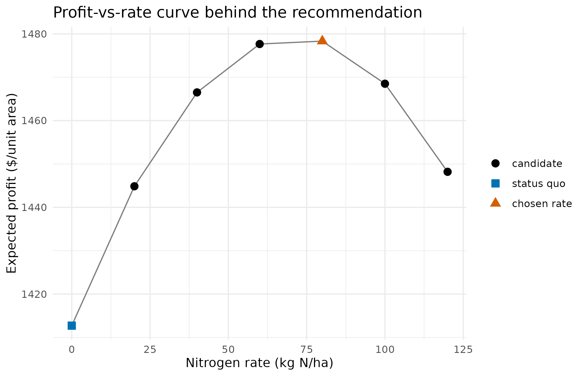
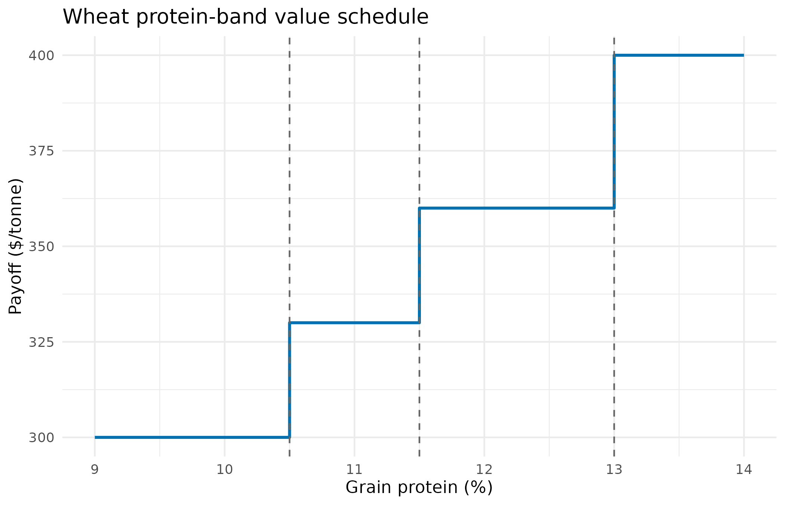

library(grainPlan)
have_agridat <- requireNamespace("agridat", quietly = TRUE)
have_ggplot2 <- requireNamespace("ggplot2", quietly = TRUE)Why
An agronomist closing out a season has three inference results waiting on the desk – a nitrogen-response trial, a variety trial, a protein target – and one blunt question for each: what should I actually do about it, and how do I tell when the tool itself does not trust the evidence enough to answer? A wrong number costs a season’s margin; a confident wrong number is worse than a plain shrug, because nobody double-checks a number that looks sure of itself.
grainPlan is the practitioner last-mile of the ORCHESTRA agricultural
analytics stack. An upstream member produces an inference result – a
yield posterior, a multi-environment variety trial, a genomic prediction
– and grainPlan turns it into an actionable grain-production plan: how
much nitrogen to apply, which variety to sow, whether to chase a quality
grade. It is a thin grain-semantics layer over the decideR
decision engine: the expected-utility maximisation, the abstention
logic, and the grounding firewall are all decideR’s, reused
whole; grainPlan adds the grain economics and the grain meaning. This
walkthrough runs end-to-end on real public data from the
agridat package and answers the agronomist’s question three
times over – a rate, a variety, a grade target – and then a fourth time
for the case a report cannot afford to get wrong: what the plan looks
like when one of its legs is not there to trust.
What
Four decision verbs and two orchestrating types carry the whole of
this vignette. plan_nitrogen_rate() and
plan_nitrogen_rate_from_manifest() price a nitrogen rate by
expected profit; plan_variety() and
plan_variety_from_manifest() rank a candidate variety or
hybrid under a downside-aware merit loss;
plan_grade_target() chooses how hard to push a
quality-driving input under a payoff that steps at a delivery-grade
threshold. Every one of these wraps decideR::decide() or a
sibling engine call and returns a grain_decision: the
recommended action, its unit, a grower-facing rationale, and a grounding
token copied straight off the wrapped decideR::decision,
never recomputed. plan_season() gathers several
grain_decisions into one grain_plan, combining
their grounding worst-case through
decideR::combine_grounding() so a plan resting on any
unverified decision is itself unverified;
grain_plan_table() flattens that plan into the
one-row-per-decision table a report reads, and
grain_is_grounded() is the predicate a downstream
automation gates on before acting. The grain value library –
wheat_protein_bands(),
barley_malting_premium(), n_rate_economics() –
consolidates the economics these decisions price against, so a schedule
is named and documented rather than an anonymous expression re-derived
at every call site.
Do
A nitrogen rate from a real yield response
The agridat dataset lasrosas.corn records corn
yield-monitor data for a field near Las Rosas, Rio Cuarto, Cordoba,
Argentina, under variable nitrogen fertiliser across the 1999 and 2001
harvests (Anselin, Bongiovanni & Lowenberg-DeBoer, 2004). We
summarise it into a yield-response curve, build a posterior of yield at
each candidate rate, and ask grainPlan for the profit-optimal rate. The
economics live in the grain value library:
n_rate_economics() consolidates the profit utility –
revenue at the grain price less the nitrogen cost – so a profit-priced
rate decision reads as its economics rather than as an anonymous
expression.
data("lasrosas.corn", package = "agridat")
corn <- lasrosas.corn
# A candidate nitrogen grid spanning the trial, and a simple yield-response
# summary: a quadratic mean-yield fit against nitrogen, with the trial's
# residual spread used to build a posterior of yield at each rate. This
# stands in for the yield posterior an ORCHESTRA inference member (a PESTO
# inversion, a mechanistic yield-response model) would emit as an
# orchestra_manifest.
#
# The draws MUST be coupled across rate columns: one draw index has to mean
# "the same realised season" at every candidate rate, because the decision
# is a paired comparison between candidate rates on the posterior, not a
# comparison of two independent samples. We therefore draw one residual
# vector `eps` and add it to every rate's fitted mean, rather than drawing
# each column independently (independent columns roughly double the
# between-rate contrast variance and can mask a real, decisive difference).
rates <- seq(0, 120, by = 20)
fit <- stats::lm(yield ~ nitro + I(nitro^2), data = corn)
sigma <- summary(fit)$sigma
n_draws <- 1500L
eps <- stats::rnorm(n_draws, 0, sigma)
yield_draws <- vapply(
rates,
function(r) {
mu <- stats::predict(fit, newdata = data.frame(nitro = r))
mu + eps
},
numeric(n_draws))
# Grain and nitrogen prices are the caller's to supply. `lasrosas.corn`
# reports yield in quintals/ha (agridat's own documentation), so the grain
# price below is expressed per quintal; it is illustrative, not the price
# structure the trial's own economic analyses used (Anselin et al. (2004)
# report $6.85/quintal and $0.4348/kg N for their own analysis).
n_plan <- plan_nitrogen_rate(
yield_draws, rates,
price_grain = 22, # $ per quintal (illustrative)
price_n = 1.2, # $ per unit nitrogen (illustrative)
crop = "corn",
grounding = decideR::grounding_grounded())
n_plan
#> <grain_decision> RECOMMENDED [grounded]
#> crop : corn
#> kind : nitrogen_rate
#> action : 80 kg N/ha
#> why : Apply 80 kg N/ha to the corn crop: it maximises expected profit ($1478.3/unit area) and clearly beats the status quo on the posterior.The recommendation is a grain_decision: the chosen rate,
the crop, a grower-facing rationale, and – carried beside the numbers,
never inferred from them – the grounding token.
plot_df <- n_plan@decision@candidates
plot_df$role <- "candidate"
plot_df$role[plot_df$action == 0] <- "status quo"
plot_df$role[plot_df$action == n_plan@action] <- "chosen rate"
plot_df$role <- factor(plot_df$role,
levels = c("candidate", "status quo", "chosen rate"))
ggplot2::ggplot(plot_df, ggplot2::aes(x = action, y = expected_utility)) +
ggplot2::geom_line(colour = "grey50") +
ggplot2::geom_point(ggplot2::aes(colour = role, shape = role), size = 3) +
ggplot2::scale_colour_manual(
name = NULL,
values = c(candidate = "#000000", `status quo` = "#0072B2",
`chosen rate` = "#D55E00")) +
ggplot2::scale_shape_manual(
name = NULL,
values = c(candidate = 16, `status quo` = 15, `chosen rate` = 17)) +
ggplot2::labs(
x = "Nitrogen rate (kg N/ha)", y = "Expected profit ($/unit area)",
title = "Profit-vs-rate curve behind the recommendation") +
ggplot2::theme_minimal()
Expected profit against candidate nitrogen rate for the lasrosas.corn fit: profit rises from the status quo, peaks at the chosen rate, and falls away beyond it.
The curve is why the decision is decisive rather than a coin toss between neighbouring rates: expected profit rises steadily from the status quo, peaks sharply at the chosen rate, and falls away either side of it, so the gap between the chosen rate and its nearest neighbours is well above the posterior’s rate-to-rate noise.
The firewall: unverified evidence abstains
Now the decisive behaviour. If the yield evidence is not grounded –
the upstream producer did not verify it against an external authority –
the same decision must not be made. grainPlan inherits
decideR’s Independent Oracle Principle firewall: an
unverified input forces abstention to the status-quo rate, never a
confident wrong recommendation.
n_plan_unverified <- plan_nitrogen_rate(
yield_draws, rates,
price_grain = 22, price_n = 1.2, crop = "corn",
grounding = decideR::grounding_unverified())
n_plan_unverified
#> <grain_decision> ABSTAINED [ungrounded]
#> crop : corn
#> kind : nitrogen_rate
#> action : 0 kg N/ha
#> why : Held at the status-quo rate: the yield evidence is unverified, so the Independent Oracle Principle firewall declines to act on it.The only thing that changed between this call and the one above is the grounding token, and it flipped decide into abstain. This is the firewall a real grain tool needs: a nitrogen rate carries a cost in the paddock, so an unverified yield model is held at the status quo, not acted on.
A variety choice from a multi-environment trial
The agridat dataset besag.met is a
multi-environment trial of 64 corn hybrids across six counties in North
Carolina, with three replicates each (Besag & Higdon, 1999). We
summarise each hybrid’s mean performance across counties into a
posterior of merit, and ask grainPlan to rank them under a
downside-aware loss – one that discounts a high-yielding but volatile
hybrid against a steady one, the stability a grower wants from a sown
variety.
data("besag.met", package = "agridat")
met <- besag.met
# Hybrid means across counties, with the county-to-county spread giving each
# hybrid a merit posterior. (A factor-analytic MET model --
# flexyBayes -- would emit this directly as an orchestra_manifest;
# here we build it directly from the public trial.) The posterior we need
# is of the HYBRID MEAN, not of a single plot, so the per-hybrid plot-level
# spread must be divided down to a standard error of the mean
# (sd / sqrt(n)); using the raw plot-level sd would overstate the mean's
# uncertainty by roughly sqrt(n) and could mask a real, decisive ranking.
# The trial ships with 36 filler rows (six per county) carrying a missing
# yield -- agridat's own note explains they complete the field rectangle for
# a spatial model and were never harvested -- so we summarise with na.rm and
# fall back to the trial-wide spread (also converted to a standard error)
# for any hybrid with too few records to estimate its own.
gen_means <- tapply(met$yield, met$gen, mean, na.rm = TRUE)
gen_sd <- tapply(met$yield, met$gen, stats::sd, na.rm = TRUE)
gen_n <- tapply(met$yield, met$gen, function(x) sum(!is.na(x)))
pooled_sd <- stats::sd(met$yield, na.rm = TRUE)
gen_sd[is.na(gen_sd)] <- pooled_sd
gen_n[gen_n < 2L] <- 1L
gen_se <- gen_sd / sqrt(gen_n)
varieties <- names(gen_means)
merit_draws <- vapply(
seq_along(gen_means),
function(j) stats::rnorm(1000L, gen_means[j], gen_se[j]),
numeric(1000L))
colnames(merit_draws) <- varieties
v_plan <- plan_variety(
merit_draws, varieties, risk_aversion = 0.5, crop = "corn",
grounding = decideR::grounding_grounded())
v_plan
#> <grain_decision> RECOMMENDED [grounded]
#> crop : corn
#> kind : variety
#> action : G05 variety
#> why : Sow G05 in the corn crop: it leads the downside-aware merit ranking and clearly beats the incumbent (G01) on the posterior.The recommendation is the leading hybrid on the downside-aware
ranking; the full ranked short-list is in the wrapped decision’s
candidate ledger, with the hybrid labels attached (the ledger’s
action column carries the integer index grainPlan decides
over, so we join the hybrid names back on for a readable table):
ledger <- v_plan@decision@candidates
ledger$hybrid <- varieties[ledger$action]
ledger <- ledger[order(-ledger$expected_utility),
c("hybrid", "action", "expected_utility", "feasible")]| Hybrid | Index | Expected merit | Feasible |
|---|---|---|---|
| G05 | 5 | 119.98 | TRUE |
| G54 | 54 | 119.85 | TRUE |
| G38 | 38 | 117.95 | TRUE |
| G61 | 61 | 116.59 | TRUE |
| G22 | 22 | 114.87 | TRUE |
A quality-grade decision
Many grain payoffs are not smooth in the outcome they reward: a
delivery is paid by quality grade, so the value steps at a protein
threshold rather than rising continuously. grainPlan’s value library
consolidates these grade schedules. wheat_protein_bands()
prices the Australian milling-wheat grades by protein, following the
band thresholds published by Grain Trade Australia, and
plan_grade_target() decides how hard to push a
protein-driving input under that step payoff – a decision governed by
the posterior probability of clearing each band, exactly the threshold
economics decideR’s grade-band loss expresses.
protein_value <- wheat_protein_bands()| Band | Payoff ($/tonne) |
|---|---|
| Feed (<10.5) | 300 |
| ASW [10.5, 11.5) | 330 |
| APW [11.5, 13.0) | 360 |
| AH/APH (>=13.0) | 400 |
grid_protein <- seq(9, 14, by = 0.02)
schedule_df <- data.frame(
protein = grid_protein,
payoff = protein_value(grid_protein))
breaks_df <- data.frame(protein = attr(protein_value, "breaks"))
ggplot2::ggplot(schedule_df, ggplot2::aes(x = protein, y = payoff)) +
ggplot2::geom_step(colour = "#0072B2", linewidth = 0.9) +
ggplot2::geom_vline(data = breaks_df, ggplot2::aes(xintercept = protein),
linetype = "dashed", colour = "grey40") +
ggplot2::labs(
x = "Grain protein (%)", y = "Payoff ($/tonne)",
title = "Wheat protein-band value schedule") +
ggplot2::theme_minimal()
The wheat protein-band value schedule
(wheat_protein_bands()): a price per tonne that steps up at
each published grade threshold. Dashed lines mark the
milling/hard/prime-hard breaks; the step shape is what the table above
cannot show.
A baseline protein posterior just below the milling band, and a nitrogen top-up that lifts protein at a per-unit cost, gives grainPlan something to weigh against that schedule: the decision prices the chance of clearing the 11.5% band against the cost of pushing for it.
protein <- stats::rnorm(2000L, mean = 11.0, sd = 0.5)
g_plan <- plan_grade_target(
protein, actions = seq(0, 60, by = 10), value = protein_value,
quality_shift = function(rate, p) p + 0.02 * rate, cost = 0.3,
crop = "wheat", grounding = decideR::grounding_grounded())
g_plan
#> <grain_decision> RECOMMENDED [grounded]
#> crop : wheat
#> kind : grade_target
#> action : 60 input level
#> why : Set the input to 60 for the wheat crop: it maximises the expected graded payoff ($341.41/t) by raising the posterior probability of clearing a higher quality band, net of input cost.At this cost the top-up pays for itself: the recommended input level is the top of the candidate range, because the expected graded payoff rises monotonically with the higher probability of clearing the 11.5% band – the candidate ledger below shows the full trade-off.
| Input level | Expected payoff ($/t) | Feasible |
|---|---|---|
| 0 | 329.88 | TRUE |
| 10 | 332.70 | TRUE |
| 20 | 335.35 | TRUE |
| 30 | 338.14 | TRUE |
| 40 | 340.10 | TRUE |
| 50 | 340.86 | TRUE |
| 60 | 341.41 | TRUE |
From an upstream manifest
The examples so far assembled the yield and merit posteriors by hand.
In the orchestra, an upstream member emits an
orchestra_manifest instead – the C2 v2 generic manifest
contract in the orchestra’s cross-package governance – and grainPlan
reads it directly through decideR’s duck-typed pipeline
tail, taking no dependency on the manifest constructor package. Here is
a minimal stand-in built from a tiny S7 class, standing for the manifest
a real producer would emit.
mini_manifest <- S7::new_class(
"mini_manifest",
properties = list(
outputs = S7::class_any,
metadata = S7::class_list,
run_id = S7::class_character,
emitter_package = S7::class_character))A yield-per-rate draws matrix, the shape a PESTO inversion emits,
carried in outputs with the producer’s grounding token in
metadata$grounding:
rates_m <- seq(0, 150, by = 25)
ymax <- stats::rnorm(1200L, 5.5, 0.3)
yld_m <- vapply(rates_m,
function(r) 3 + (ymax - 3) * (1 - exp(-r / 80)),
numeric(1200L))
ym <- mini_manifest(outputs = yld_m,
metadata = list(grounding = decideR::grounding_grounded()))
plan_nitrogen_rate_from_manifest(ym, rates_m, price_grain = 350, price_n = 1.3,
crop = "wheat")
#> <grain_decision> RECOMMENDED [grounded]
#> crop : wheat
#> kind : nitrogen_rate
#> action : 150 kg N/ha
#> why : Apply 150 kg N/ha to the wheat crop: it maximises expected profit ($1593/unit area) and clearly beats the status quo on the posterior.The genomic tail reads breeding values the same way. A
breeding_values manifest carries point GEBVs in
outputs$gebv alongside their genomic uncertainty, so the
reconstruction uses the genotypes’ own reliability rather than an
invented spread.
gm <- mini_manifest(
outputs = list(gebv = c(Scepter = 0.2, Vixen = 1.1, Calibre = -0.3),
pev = c(0.04, 0.04, 0.04)),
metadata = list(grounding = decideR::grounding_grounded()))
g_dec <- plan_variety_from_manifest(gm, risk_aversion = 0.5)
g_dec
#> <grain_decision> RECOMMENDED [grounded]
#> crop : wheat
#> kind : variety
#> action : Vixen variety
#> why : Sow Vixen in the wheat crop: it leads the downside-aware merit ranking and clearly beats the incumbent (Scepter) on the posterior.
g_dec@context$gebv_sd_source
#> [1] "manifest_pev"If a point-GEBV manifest carries no uncertainty and no
gebv_sd is supplied, grainPlan stops rather than fabricate
a scale for the reconstruction: a genotype switch must not turn on a
magic constant.
gm_no_sd <- mini_manifest(
outputs = list(gebv = c(Scepter = 0.2, Vixen = 1.1, Calibre = -0.3)),
metadata = list(grounding = decideR::grounding_grounded()))
plan_variety_from_manifest(gm_no_sd, risk_aversion = 0.5)
#> Error:
#> ! manifest carries point GEBVs with no per-genotype uncertainty (`pev`, `gebv_se`, or `reliability` + `genetic_var`) and `gebv_sd` was not supplied. Pass `gebv_sd` on the GEBV scale, or provide a manifest that carries the genomic uncertainty -- grainPlan will not fabricate it.The stop is not a bug to route around: it is the same firewall discipline as the grounding token, applied to a different way an upstream producer’s claim can be too thin to act on.
A manifest can also carry a refusal of its own. When the upstream
producer declares, in its own summary slot, that it did not
produce a usable result – a PESTO ensemble that never converged, say –
grainPlan reads that typed abstention before it ever looks at the draws,
and holds the decision at the status quo regardless of what the
(declined) manifest happens to carry:
refused_manifest <- mini_manifest(
outputs = list(),
metadata = list(
grounding = decideR::grounding_grounded(),
summary = list(headline = "no stable fit found", abstained = TRUE)),
run_id = "demo-refused-01", emitter_package = "PESTO")
gd_refused <- plan_nitrogen_rate_from_manifest(
refused_manifest, rates_m, price_grain = 350, price_n = 1.3, crop = "corn")
gd_refused
#> <grain_decision> ABSTAINED [ungrounded]
#> crop : corn
#> kind : nitrogen_rate
#> action : 0 kg N/ha
#> why : Held at the status-quo rate: the upstream evidence producer itself declined to produce a result, so the recommendation is withheld.Note that the producer’s own grounding token claimed
grounded; grainPlan never reaches it, because the typed
abstention is checked first. The returned object also carries a class
stamp a fleet-level gate can read without knowing it came from grainPlan
specifically:
class(gd_refused)
#> [1] "orchestra_refusal" "grainPlan_abstention"
#> [3] "grainPlan::grain_decision" "S7_object"grainPlan_abstention and orchestra_refusal
are prepended ahead of grainPlan::grain_decision, the
naming convention the orchestra’s cross-member decline gate reads
producer-agnostically – a downstream automation recognises this as a
refused decision without special-casing grainPlan’s own class.
Composing a season plan
Finally, the orchestrator. plan_season() gathers several
grain decisions into one grain_plan whose grounding is the
worst case across its decisions – a plan that rests on any unverified
decision is itself unverified, the firewall applied one level up. A plan
with a declined component is flagged so a report never reads a confident
headline over it.
The nitrogen and variety decisions above come from two separate real trials – a precision-agriculture nitrogen trial in Argentina and a multi-environment hybrid trial in North Carolina – composed here only to show the orchestrator mechanics; a real season plan would draw both decisions from the one field. Because both trials happen to be corn, the plan below labels its crop explicitly rather than infer it from either input, so the composition is always unambiguous.
season <- plan_season(
list(v_plan, n_plan),
crop = "corn", season = "2026 demonstration")
season
#> <grain_plan> 2026 demonstration -- 2 decisions [grounded]
#> - [decide ] variety : G05 variety
#> - [decide ] nitrogen_rate : 80 kg N/ha
season_tbl <- grain_plan_table(season)| Decision | Action | Unit | Abstained | Grounding |
|---|---|---|---|---|
| variety | G05 | variety | FALSE | grounded |
| nitrogen_rate | 80 | kg N/ha | FALSE | grounded |
Every recommendation in the plan carries its grounding, and the plan
as a whole carries the worst case – so a grower, or a downstream
automation, can gate on grain_is_grounded() before
acting.
grain_is_grounded(season)
#> [1] TRUEBoth decisions above were grounded, so the plan reads clean end to
end. That is the easy case. The harder, more consequential case is what
happens when one leg of the season inherits a refusal from further
upstream – the gd_refused decision built two sections back,
standing in for a PESTO ensemble that never converged. Composed
alongside the same variety decision, into a plan for the same crop:
season_refusal <- plan_season(
list(v_plan, gd_refused),
crop = "corn",
season = "2026 demonstration -- nitrogen evidence withheld upstream")
season_refusal
#> <grain_plan> 2026 demonstration -- nitrogen evidence withheld upstream -- 2 decisions [ungrounded] (partial abstention)
#> - [decide ] variety : G05 variety
#> - [ABSTAIN ] nitrogen_rate : 0 kg N/ha
refusal_tbl <- grain_plan_table(season_refusal)| Decision | Action | Unit | Abstained | Grounding |
|---|---|---|---|---|
| variety | G05 | variety | FALSE | grounded |
| nitrogen_rate | 0 | kg N/ha | TRUE | ungrounded |
grain_is_grounded(season_refusal)
#> [1] FALSERead
For the lasrosas.corn fit, grainPlan recommends 80 kg
N/ha, at an expected profit of $1478.3 per unit
area, against a status-quo profit of $1412.7 – the profit gain
the figure shows as the gap between the vermillion point and the blue
square. The recommendation carries the grounded token, so
it is the number a grower acts on.
On the same trial, the leading hybrid is G05, with an expected downside-aware merit of 119.98; the short-list table carries every hybrid the ranking considered, in order.
For the protein target, the top-up pays for itself at every rate up to the top of the candidate grid: grainPlan recommends an input level of 60, at an expected graded payoff of $341.41 per tonne.
The first season plan carries 2 decisions, both
decided, and a plan-level grounding of grounded:
grain_is_grounded() returns TRUE, so a
downstream gate lets the whole plan through. The second season plan
carries the same variety decision beside the withheld nitrogen decision;
its Abstained column reads TRUE for the
nitrogen row and its Action column carries 0 kg
N/ha – the status-quo fallback, not a priced recommendation –
while the variety row is untouched. The plan’s own grounding drops to
ungrounded and grain_is_grounded() returns
FALSE. A report built on grain_plan_table()
reads exactly those two columns, Abstained and
Grounding, to decide how to render each row: a row with
Abstained = TRUE is greyed out and printed as a declined
recommendation carrying only its status-quo fallback, never presented
beside a genuine number as though it were one.
That answers the agronomist’s question on all four counts: a rate, a hybrid, and a grade target when the evidence is grounded, and a plain, legible refusal – not a confident number – when a leg of the season is not there to trust.
Limits
The dollar values throughout – the nitrogen prices, the protein-band
payoffs, the malting premium the vignette does not exercise – are
illustrative and not current market prices or GRDC-origin figures; a
real decision needs the caller’s own price sheet. The nitrogen-response
fit pools both recorded harvest years (1999 and 2001) without a year
effect, so the response curve is an average across two seasons rather
than one season’s economics, and the season-composition examples draw
their two decisions from two real but unrelated trials – an Argentine
precision-agriculture strip trial and a North Carolina hybrid trial – to
demonstrate the orchestrator’s mechanics, not to stand in for one
grower’s actual paddock. plan_season() in this release
composes by sequencing and worst-case grounding only: it does not
re-optimise jointly across decisions, so a season plan is the sum of its
parts, not a jointly optimal allocation across them. The grounding
firewall itself trusts the token a caller or an upstream manifest
supplies; grainPlan, like decideR, does not independently
re-verify a producer’s claim of grounded against an
external authority, it only propagates and combines the token worst-case
– so a producer that mislabels its own evidence would still ride
through, and the firewall protects only against evidence that declares
its own unverified or abstained status, not evidence that misrepresents
it.
What to read next
Getting started with decideR walks the expected-utility engine, the abstention logic and the grounding firewall from the ground up – every verb in this vignette wraps that engine rather than reimplementing it.
Reproduce
Seed 1L, set once at the top of this file; every draw in
every section follows deterministically from that one stream.
sessionInfo()
#> R version 4.6.1 (2026-06-24)
#> Platform: x86_64-pc-linux-gnu
#> Running under: Ubuntu 24.04.5 LTS
#>
#> Matrix products: default
#> BLAS: /usr/lib/x86_64-linux-gnu/openblas-pthread/libblas.so.3
#> LAPACK: /usr/lib/x86_64-linux-gnu/openblas-pthread/libopenblasp-r0.3.26.so; LAPACK version 3.12.0
#>
#> locale:
#> [1] LC_CTYPE=C.UTF-8 LC_NUMERIC=C LC_TIME=C.UTF-8
#> [4] LC_COLLATE=C.UTF-8 LC_MONETARY=C.UTF-8 LC_MESSAGES=C.UTF-8
#> [7] LC_PAPER=C.UTF-8 LC_NAME=C LC_ADDRESS=C
#> [10] LC_TELEPHONE=C LC_MEASUREMENT=C.UTF-8 LC_IDENTIFICATION=C
#>
#> time zone: UTC
#> tzcode source: system (glibc)
#>
#> attached base packages:
#> [1] stats graphics grDevices utils datasets methods base
#>
#> other attached packages:
#> [1] grainPlan_0.2.1.9000
#>
#> loaded via a namespace (and not attached):
#> [1] vctrs_0.7.3 cli_3.6.6 knitr_1.52 rlang_1.3.0
#> [5] xfun_0.62 otel_0.2.0 textshaping_1.0.5 S7_0.2.2
#> [9] jsonlite_2.0.0 labeling_0.4.3 glue_1.8.1 decideR_0.3.1.9000
#> [13] htmltools_0.5.9 ragg_1.5.2 sass_0.4.10 scales_1.4.0
#> [17] rmarkdown_2.32 grid_4.6.1 evaluate_1.0.5 jquerylib_0.1.4
#> [21] fastmap_1.2.0 yaml_2.3.12 lifecycle_1.0.5 compiler_4.6.1
#> [25] RColorBrewer_1.1-3 fs_2.1.0 farver_2.1.2 systemfonts_1.3.2
#> [29] digest_0.6.39 R6_2.6.1 pillar_1.11.1 bslib_0.12.0
#> [33] withr_3.0.3 gtable_0.3.6 tools_4.6.1 agridat_1.26
#> [37] pkgdown_2.2.1 ggplot2_4.0.3 cachem_1.1.0 desc_1.4.3